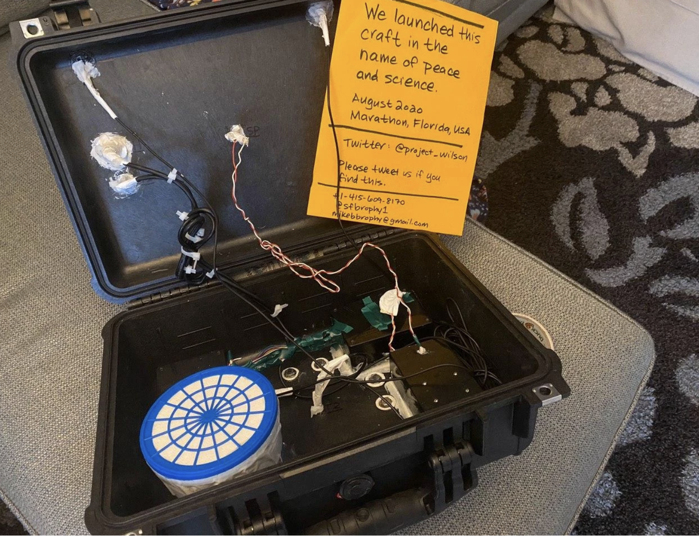

Built an Autonomous Research Buoy
 Project Wilson WebsiteWilson is a drifting buoy powered by the sun. Wilson's brain is an Arduino computer. Its senses are an array of instruments: an air temperature sensor, a water temperature sensor, a barometer, a hydrometer (to measure relative humidity), and a GPS receiver (for location).
Wilson gathers information about its environment and transmits it to Mission Control (San Francisco, California) via satellite every 12 hours.
It's named after Wilson the Volleyball from the movie "Cast Away", was inspired by the MD Buoy Project., and was built in San Francisco, California.